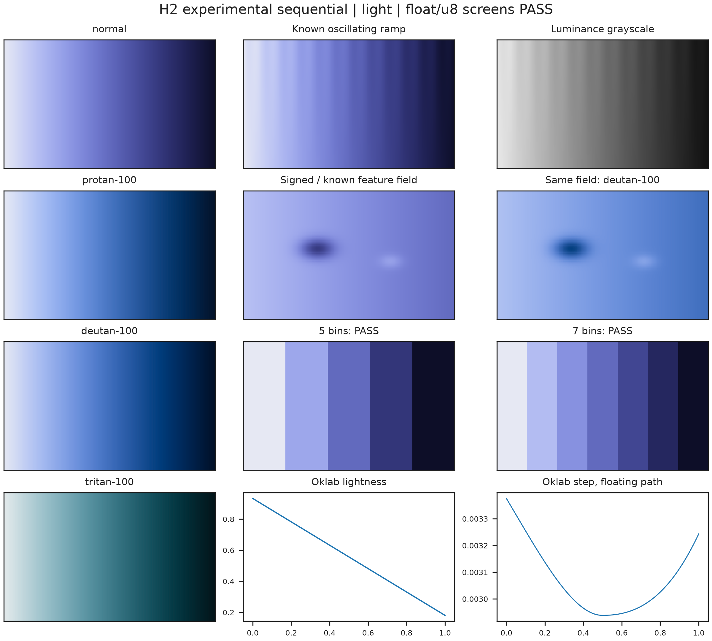
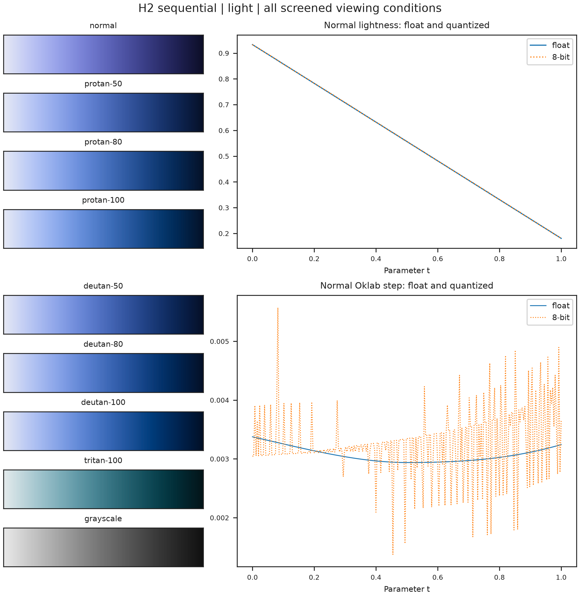
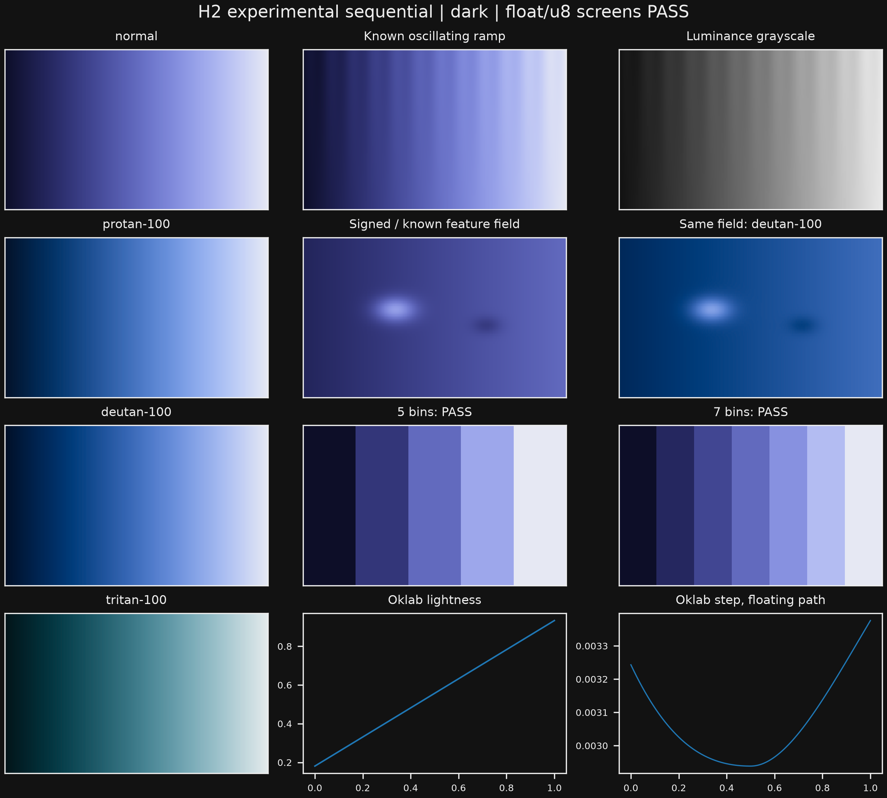
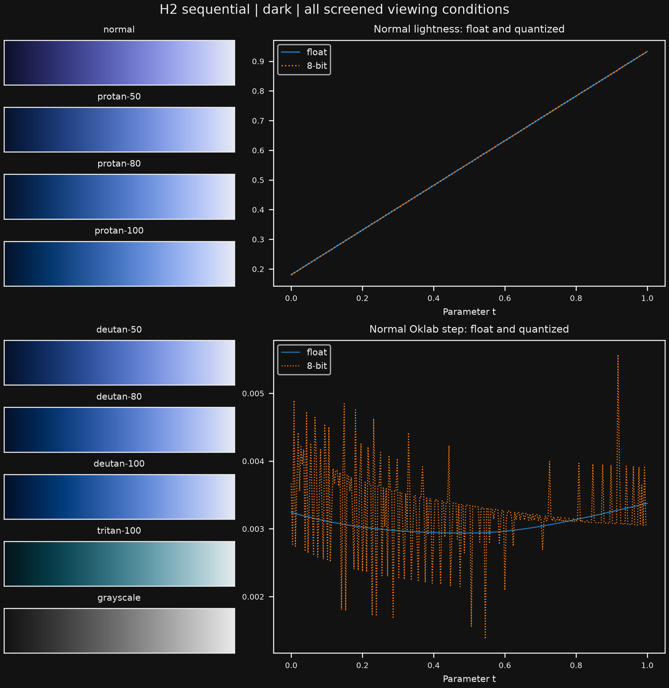
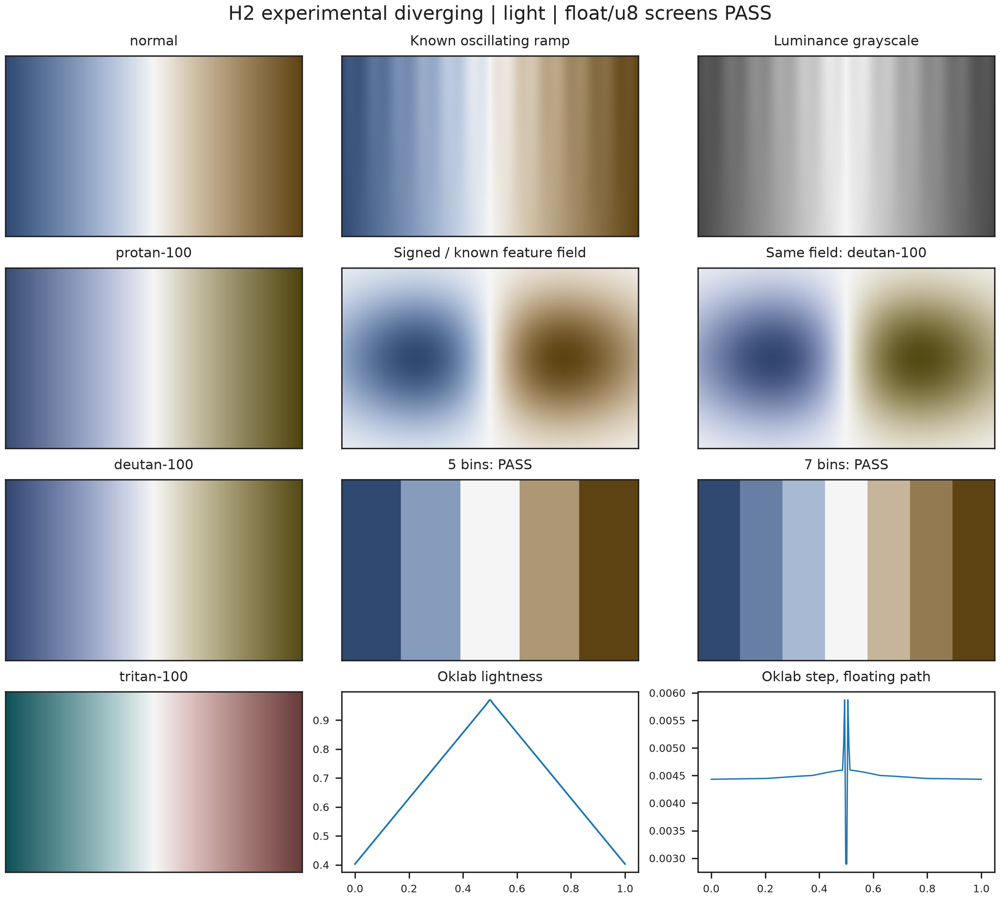
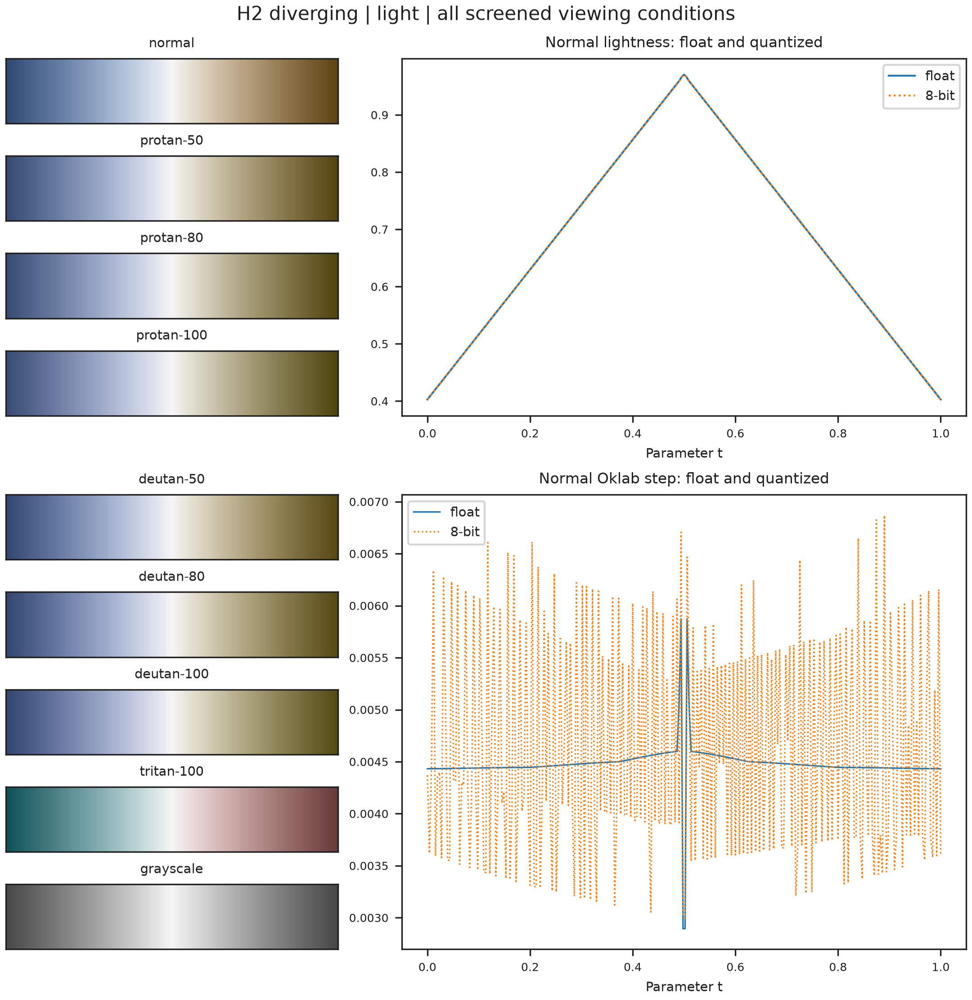
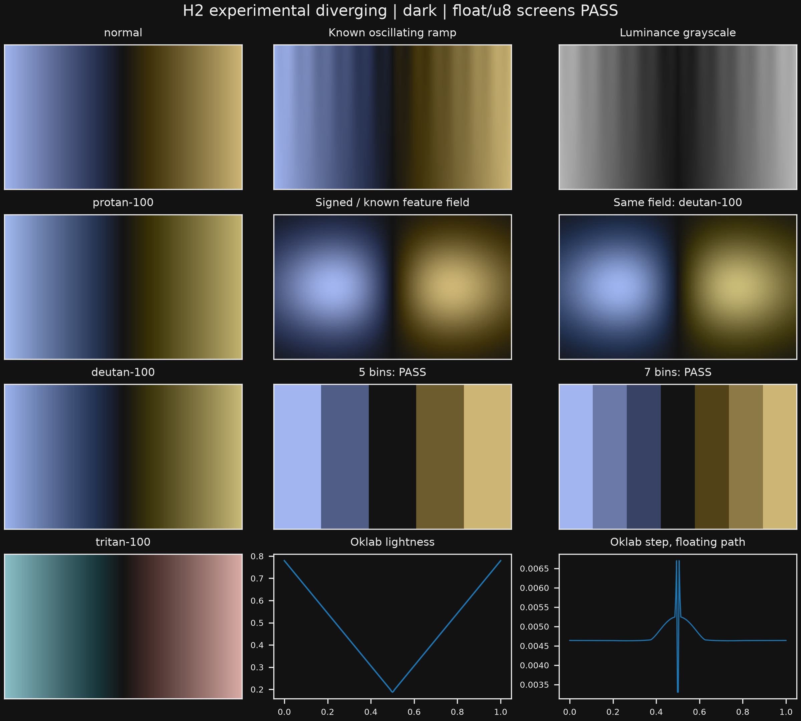
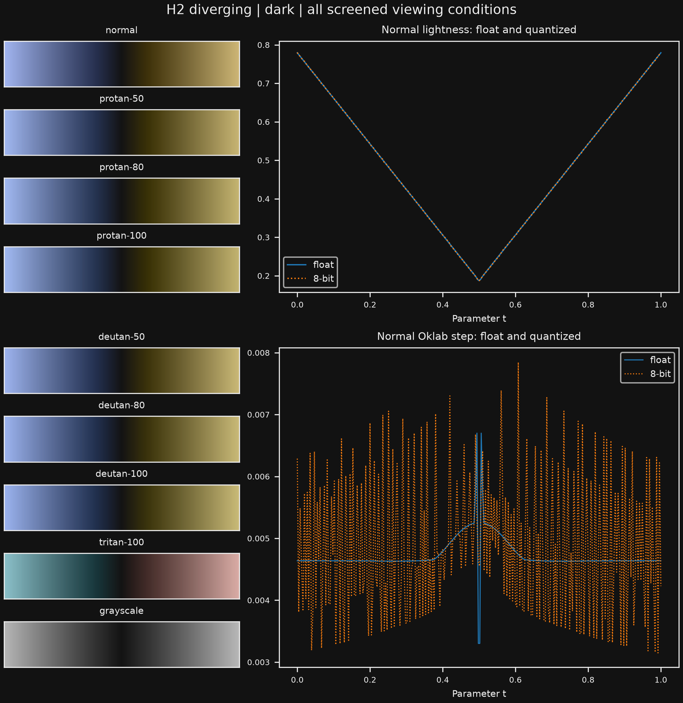

H1 published-reference comparison gallery
Four experimental prepared paths pass the unchanged H1 profiles in both floating point and 8-bit export. Complete-segment gamut/C1/order certificates supplement a 4,097-point CVD ordering audit. These are numerical screens; perceptual review remains pending.
Numerical results and measured generation budgets · Methods and limitations
Passing cached filled-field counts: [2, 3, 4, 5, 6, 7, 8, 9, 10, 11, 12, 13, 14, 15, 16, 17, 18, 19]. Every count below the curve-length bound is audited; larger counts are rejected with that bound. No accepted H4 default is claimed.


Passing cached filled-field counts: [2, 3, 4, 5, 6, 7, 8, 9, 10, 11, 12, 13, 14, 15, 16, 17, 18, 19]. Every count below the curve-length bound is audited; larger counts are rejected with that bound. No accepted H4 default is claimed.


Passing cached filled-field counts: [2, 3, 4, 5, 6, 7, 9, 11, 13]. Every count below the curve-length bound is audited; larger counts are rejected with that bound. No accepted H4 default is claimed.


Passing cached filled-field counts: [2, 3, 4, 5, 6, 7, 8, 9, 10, 11, 13, 15, 17, 19]. Every count below the curve-length bound is audited; larger counts are rejected with that bound. No accepted H4 default is claimed.

